Actuarios Consultores & Asociados
Garantizar servicios y resultados requiere de especialistas
Descubra porque somos su mejor opción
Acerca de AC&A
"Non enim paranda nobis solum, sed fruenda apientia est - No basta alcanzar la sabiduria, es preciso saber hacer uso de ella"
Actuarios Consultores & Asociados (AC&A) es una empresa fundada en el año 1986 y estructurada con base en dos grandes áreas. La división actuarial, encargada de todo lo relacionado con los servicios de consultoría, asesorías, auditorias, y estudios especiales en el campo actuarial, económico y financiero. La división de salud, encargada de todas las actividades relacionadas con programas de protección de la salud, públicos y privados. Siendo una empresa diseñada pensando en productos y servicios de excelente calidad, cuenta con un staff de especialistas en modelos matemáticos de riesgo y en gerencia de riesgos y seguros. En Ingeniería Industrial, tecnologías de la información y programación, elaboración, evaluación y optimización de normas y procedimientos. En estudios económicos, estudios estadísticos, beneficios laborales, pensiones y jubilaciones.
Una de las características más destacada de AC&A es su política de estudio e investigación permanente, la cual ha dado como resultado la incorporación de nuevos e innovadores procesos. Entre ellos se destacan el Sistema Estadístico, el Sistema de Inferencia Estadística y de Modelos matemáticos de Riesgo, el Sistema de Cálculo Numérico y los llamados procesos inteligentes, los cuales se han logrado a través de una Memoria Tecnológica que recopila años de experiencias y conocimientos.
La misión de nuestro grupo es diseñar, crear e implementar soluciones variables e integrales, de tal manera de proporcionar servicios óptimos, al sector público y privado, mediante altos niveles de profesionalismo, tecnología de punta y estándares de rápida respuestas que permitan atender en forma eficaz, optima y oportuna las necesidades de nuestros clientes a nivel nacional e internacional. Por tal razón nos hemos esmerado en reunir un equipo de profesionales de diversas especialidades con una exitosa trayectoria y experiencia.
Ser lideres en todos los servicios que ofrecemos y mantener estrictos estándares de calidad superando las expectativas de nuestros clientes. El crecimiento y expansión de los Servicios Profesionales es la principal prioridad para nuestra Empresa. Es por ello que constantemente estamos desarrollando nuevas Redes de Servicios Clínicos y conexos en Venezuela y Redes afiliadas en el exterior, principalmente en los Estados Unidos, por intermedio de las cuales hemos extendido nuestros servicios a las ciudades más importantes de ese país y del mundo entero.
División Actuarial
Valoración de empresas, estudios de mercado y de factibilidad económica para el desarrollo de nuevas empresas. Evaluación, diseño y desarrollo de planes de jubilación y retiro. Evaluación de pasivos laborales, planificación de esquemas y sistemas de beneficios laborales de largo plazo. Evaluación económica de planes de protección para el personal empleado, obrero y ejecutivo. Auditorías, certificación de márgenes de solvencia, certificación de reservas técnicas y matemáticas. Diseño y desarrollo de productos para empresas de seguros y reaseguros.
División de Salud
Contratación, administración, asesoramiento, diseño y manejo de programas administrados de salud, medicina preventiva, medicina prepagada, farmacia, laboratorio y tutoriales, tanto para el sector público como para el privado. Desarrollo de plataformas tecnológicas, sistemas de información y redes nacionales e internacionales de centros médicos como soporte a los programas de salud. Atención personalizada, asesoramiento y manejo de solicitudes de reclamos a través de su call center, durante las 24 horas de los 365 días del año.
Servicios
Conozca los detalles y beneficios de los diversos servicios que AC&A pone a su disposición
¿por qué AC&A?
A través de AC&A las empresas obtienen tecnológia de punta y el respaldo de profesionales altamente entrenados para garantizar un desempeño de la mas alta calidad. Esto permite ademas la acumulación de experiencia sobre los temas tratados, sin la exposición al riesgo que implica la ejecución directa de todas las actividades y operaciones por parte de las empresas.
453
proyectos
200
clientes
100%
compromiso
Clientes
Nuestros servicios han llegado a una amplia variedad de clientes conozca algunos de estos.
 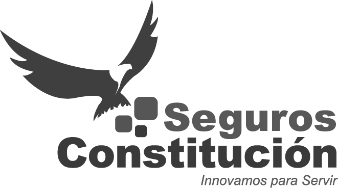
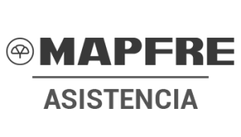
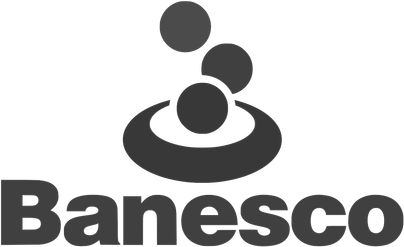
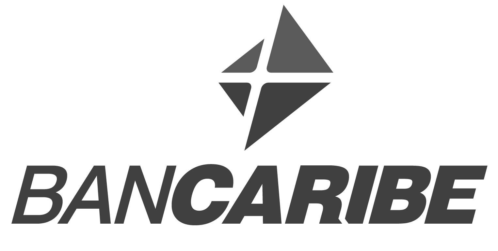
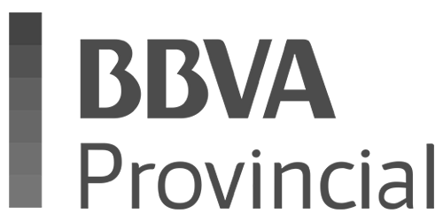
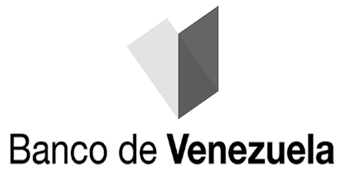
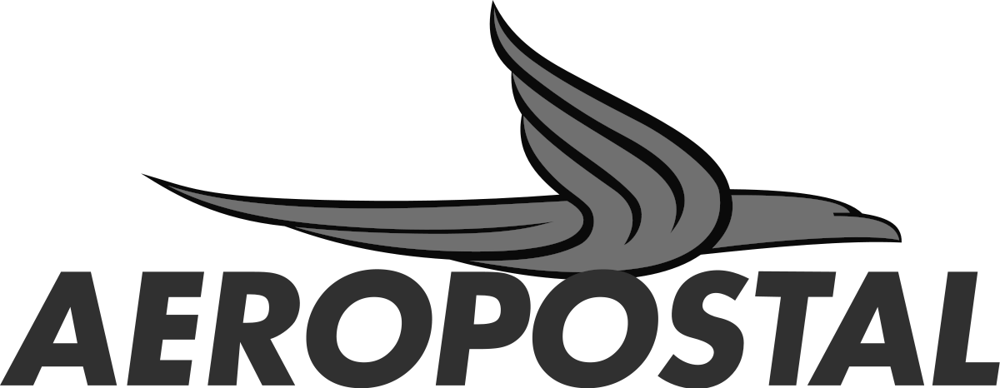
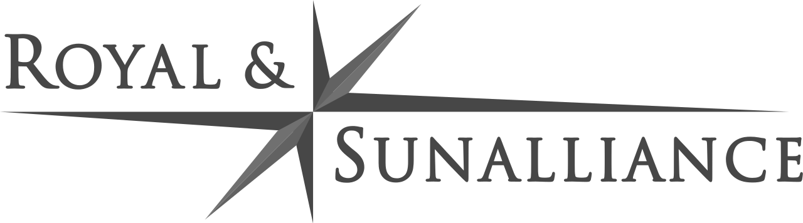
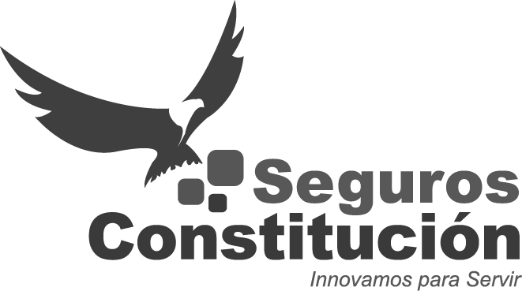
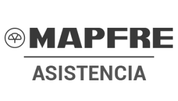
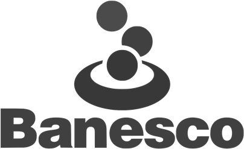
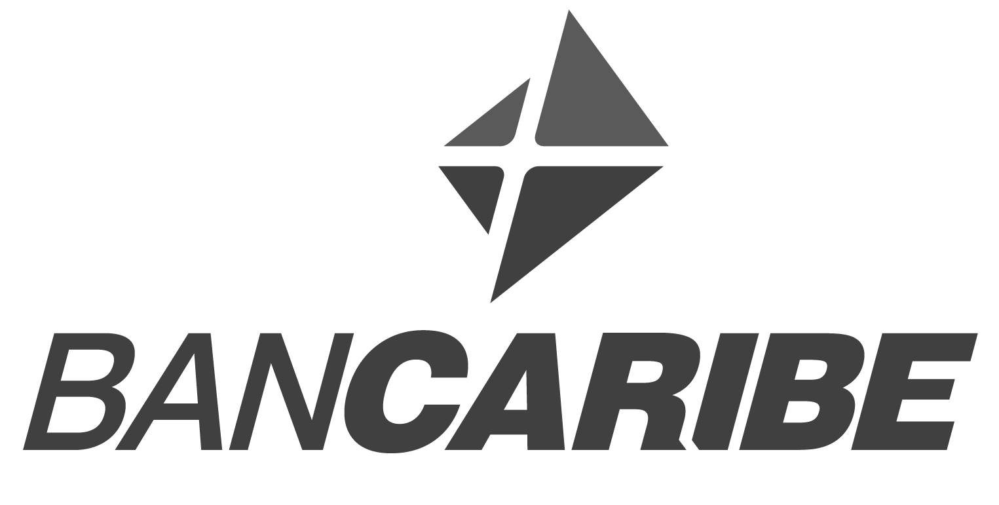
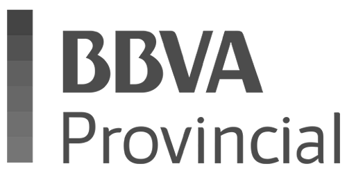
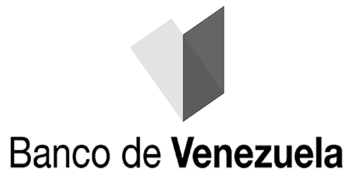
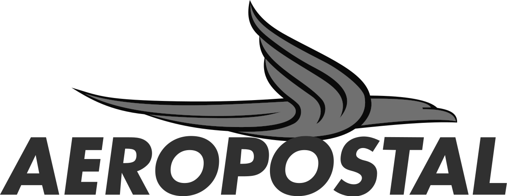
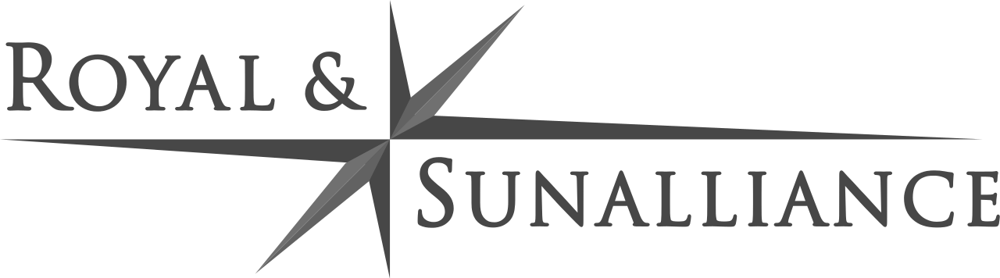